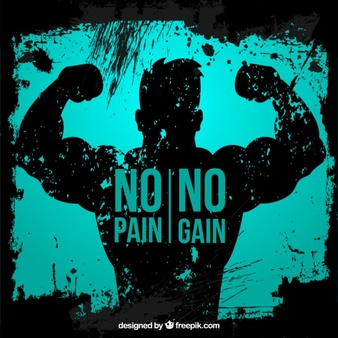

The India chapter of Body Booster Gym started in 2013, when the first Body Booster Gym India branch was set up in New Delhi.
With multiple awards for excellence under its belt including 2 awards from the Lions Club for the “Best Fitness Chain”, An award from the Images Beauty & wellness for the Most admired fitness chain of the year”, an award from Franchise India, 8 awards from Body Booster Gym International making it a very eventful 14 years in the growth of the business. K’s Gym India has bagged the most prestigious Economic Times ET award for ‘Excellence in Marketing 2013’ & ‘Excellence in Customer Service 2014’.
Body Booster Gym India is acknowledged for its unrivalled success in providing the finest equipment and fitness knowledge available to help its members achieve their individual potential. It follows a globally proven fitness training module with state-of-the-art infrastructure and delivery methodology and continuous up gradation through training programs. With certified trainers and nutritional counseling, Gold’s Gym provides a comprehensive approach to the health and well-being of its member.
Catering to famous celebrities including film & television personalities, sportspersons & Corporate honchos, Body Booster Gym lives up to its reputation to give results. Whether your goal is to burn fat, tone or add muscle, build strength, increase flexibility or improve your cardiovascular health, only Body Booster Gym has the atmosphere and experience you need